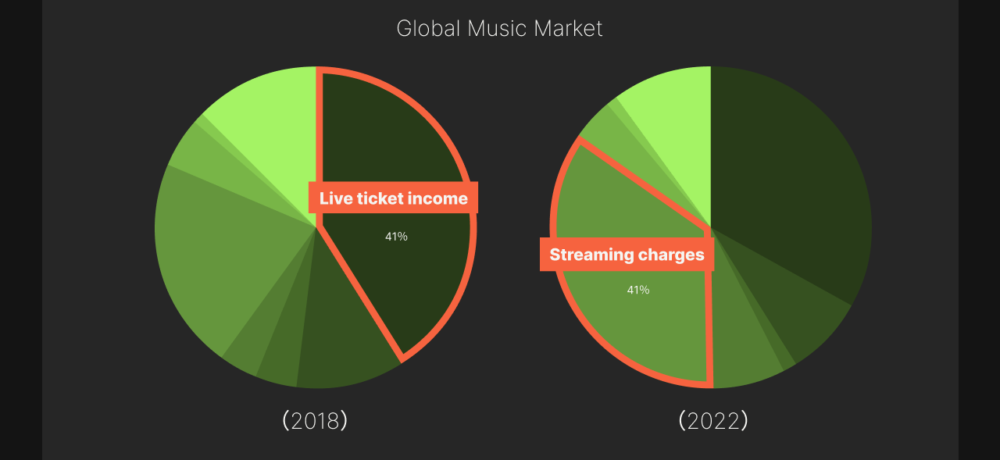
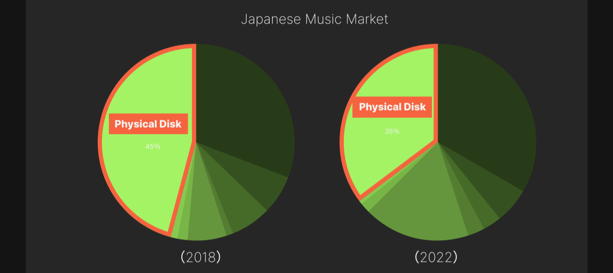
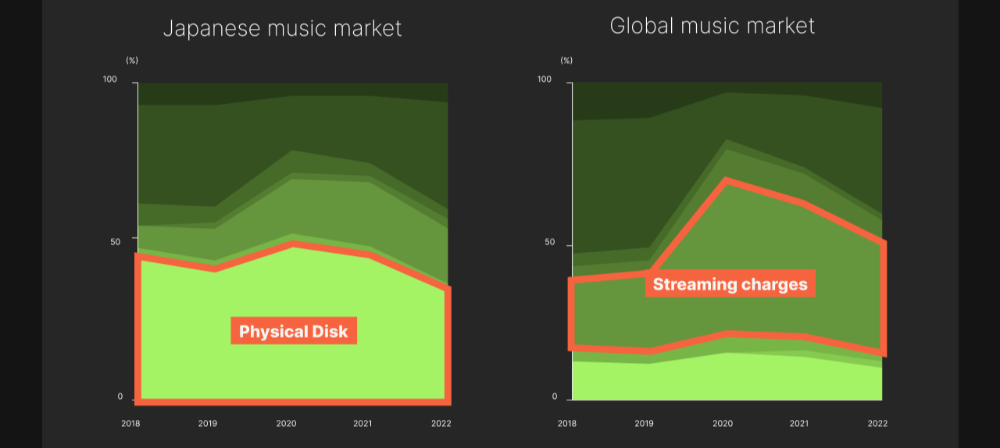
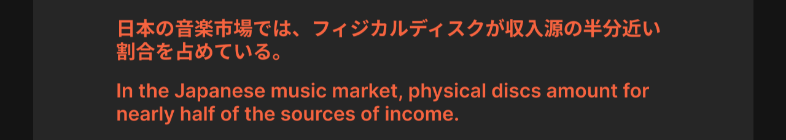
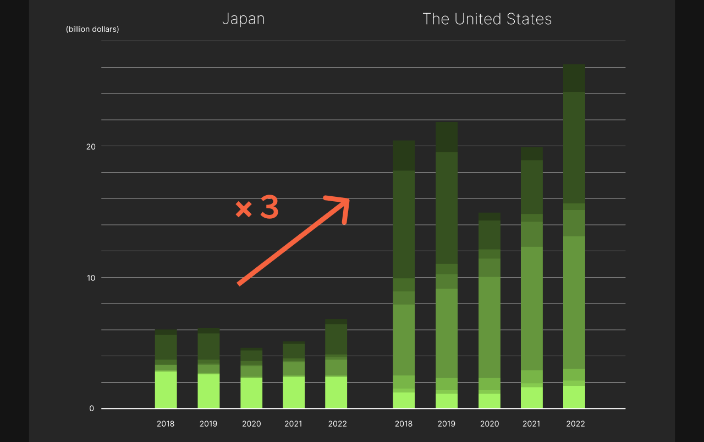

市場規模の2018年・2022年の比較
Comparison of music market size in 2018 and 2022.
 収入源における割合の経年変化
Changes in the proportion of income sources over time
 日本と米国の比較
Comparison between Japan and the United States
音楽売上ランキング
The ranking of music sales
市場規模
Music market size
